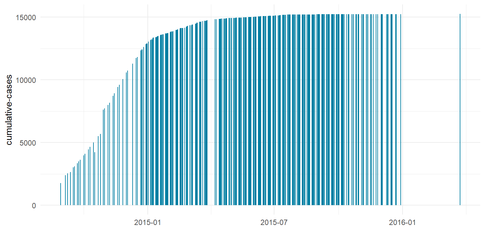

Quarto enables you to weave together content and executable code into a finished document. To learn more about Quarto see https://quarto.org.
Running Code
When you click the Render button a document will be generated that includes both content and the output of embedded code. You can embed code like this:
Code
#I output:false# Load libraries library(here)
Warning: package 'here' was built under R version 4.3.3
here() starts at C:/Users/PrecisionLab/OneDrive - Universitaet Bern/Documents/RStudio_Project Course/Project template/MyFirst_RProject
Code
library(lubridate)
Attaching package: 'lubridate'
The following objects are masked from 'package:base':
date, intersect, setdiff, union
Code
library(readr)library(unibeCols)
Warning: package 'unibeCols' was built under R version 4.3.3
Code
library(tidyverse)
Warning: package 'tidyverse' was built under R version 4.3.3
Warning: package 'ggplot2' was built under R version 4.3.3
── Conflicts ────────────────────────────────────────── tidyverse_conflicts() ──
✖ dplyr::filter() masks stats::filter()
✖ dplyr::lag() masks stats::lag()
ℹ Use the conflicted package (<http://conflicted.r-lib.org/>) to force all conflicts to become errors
Introduction
Ebola virus disease (EVD), formerly known as Ebola haemorrhagic fever, is a severe, often fatal illness affecting humans and other primates. The aim of this analysis is to visualize the worldwide Ebola cumulative-incidence during 2014-2016 epidemic period.
Data
We analyzed the data of cumulative-incidence of Ebola reported by “UNICEF”. https://www.unicef.de/informieren/aktuelles/blog/-/ebola-fakten-und-lichtblicke/274006
# Process data window_start <-ymd("2014.01.01")window_end <-ymd("2016.12.31")Cum_conf_cases <- cases |>filter(Date >= window_start & Date <= window_end) |>select (Date,Cum_conf_cases)
Figure 1 shows the number of cumulative-cases of Ebola in the worldwide from 2014-01-01 to 2016-12-31.
Code
ggplot(cases, aes (x= Date, y= Cum_conf_cases)) +geom_bar (stat ="identity", fill =unibeSaphire ())+labs(x ="", y ="cumulative-cases") +theme_minimal()

Figure 1: Cumulative-cases of Ebola Epidemic period (2014-2016).
Conclusions
The 2014–2016 outbreak of Ebola was the largest since the virus was first discovered in 1976. the number of cumulative-cases of Ebola in the worldwide had a progressive increase since 2014 until the winter of 2016.
Source Code
---title: "Ebola Epidemic in 2014-2016"author: "Carolina Fragozo"date: Todayformat: html: toc: true code-fold: show code-tools: trueeditor: visual---## QuartoQuarto enables you to weave together content and executable code into a finished document. To learn more about Quarto see <https://quarto.org>.## Running CodeWhen you click the **Render** button a document will be generated that includes both content and the output of embedded code. You can embed code like this:```{r}#I output:false# Load libraries library(here)library(lubridate)library(readr)library(unibeCols)library(tidyverse)```## Introduction Ebola virus disease (EVD), formerly known as Ebola haemorrhagic fever, is a severe, often fatal illness affecting humans and other primates. The aim of this analysis is to visualize the worldwide Ebola cumulative-incidence during 2014-2016 epidemic period. ## DataWe analyzed the data of cumulative-incidence of Ebola reported by "UNICEF". https://www.unicef.de/informieren/aktuelles/blog/-/ebola-fakten-und-lichtblicke/274006```{r load data}#| output: false# Read datacases <-read_csv("/Users/PrecisionLab/OneDrive - Universitaet Bern/Documents/RStudio_Project Course/ebola.csv")``````{r set parameters}# Process data window_start <-ymd("2014.01.01")window_end <-ymd("2016.12.31")Cum_conf_cases <- cases |>filter(Date >= window_start & Date <= window_end) |>select (Date,Cum_conf_cases) ```@fig-cases shows the number of cumulative-cases of Ebola in the worldwide from `r window_start` to `r window_end`. ```{r create figure}#| label: fig-cases #| fig-cap: "Cumulative-cases of Ebola Epidemic period (2014-2016)."#| fig-width: 8#| fig-height: 4ggplot(cases, aes (x= Date, y= Cum_conf_cases)) +geom_bar (stat ="identity", fill =unibeSaphire ())+labs(x ="", y ="cumulative-cases") +theme_minimal() ```# ConclusionsThe 2014–2016 outbreak of Ebola was the largest since the virus was first discovered in 1976. the number of cumulative-cases of Ebola in the worldwide had a progressive increase since 2014 until the winter of 2016.